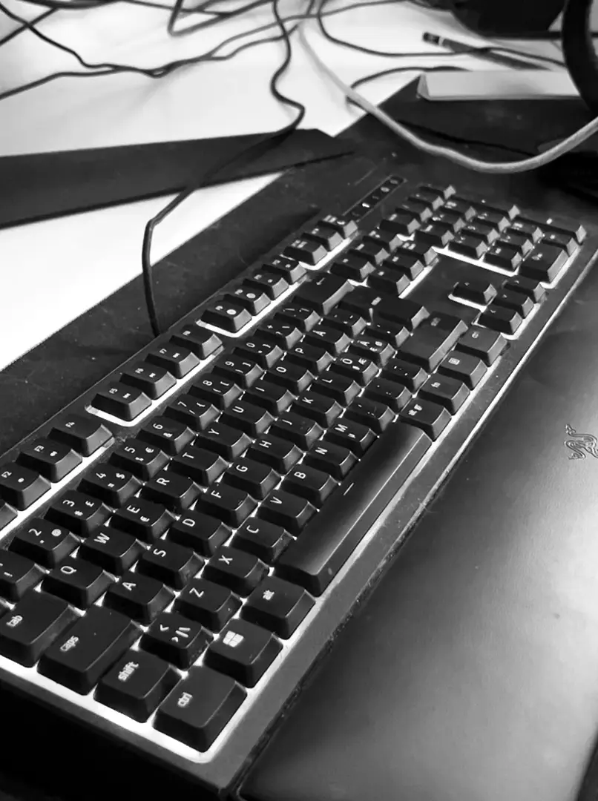
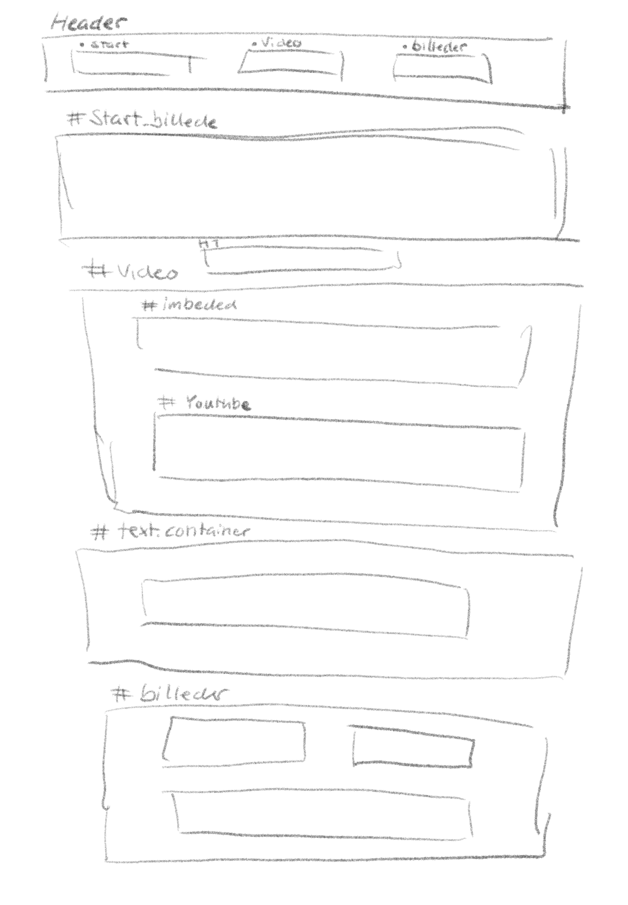
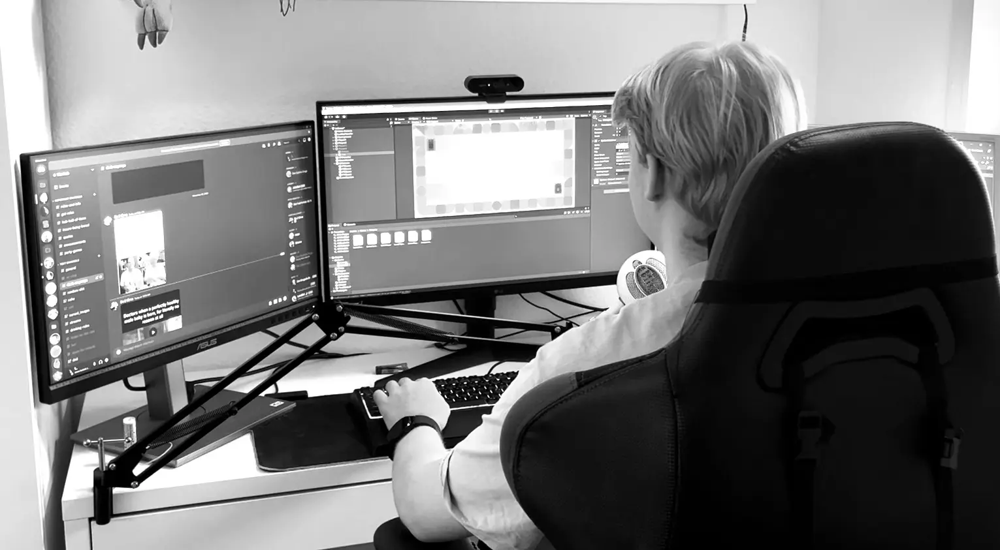

Video
Kasper Grønne er en ung, nyuddannet programmør, der i dette OneMinuteWonder fortæller om, hvorfor netop dette er hans passion, og hvordan det startede en karriere for ham.
Billeder



Kasper Grønne er en ung, nyuddannet programmør, der i dette OneMinuteWonder fortæller om, hvorfor netop dette er hans passion, og hvordan det startede en karriere for ham.